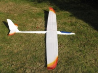

2009, Cappuccino, 2.6m wingspan and the HD 45 as wing profile, flaps, 1.8 Kg mass.
The Cappuccino is my first completely finished all-GFK/CFK model bought from Jürgen Schmierer in Stuttgart-Weilimdorf. As servos I decided to use high quality and powerful Robbe S3150 and used them at all 6 positions. Therefore the servo installation took a little longer than planned for this model, because the supplied mounting frames could not be used without modification.
The glider has favorable dimensions and is stored and transported by me with the Staufenbiel model backpack. It is in my eyes a truly universal model. It can be flown very slowly, with flaps set, as well as very quickly. It is always very well balanced and controllable. For stronger winds, I have a wing stiffener filled with three 6 mm round steel rods, as ballast.
The Cappuccino is, like most of my models, equipped with a LiIo receiver power supply. For this it is important to know the current consumption in order to dimension the longitudinal regulator circuit.
In July 2017, the fuselage was revised to accommodate an electric motor. Since this plane is suitable for a little more wind, it happens that it has to land up the slope, which sometimes leads to damage. With motor, height can be regained in such cases, which then allows a safe landing. The modification does not result in a larger wing loading.
In the history graph you can see very nicely that there are a few pure gliding flights despite the motor. Here the current, drawn in red, is at zero. The internal resistance of the drive battery shown runs in waves related to the outside temperature.
The graphics were created with the free open source program DataExplorer.